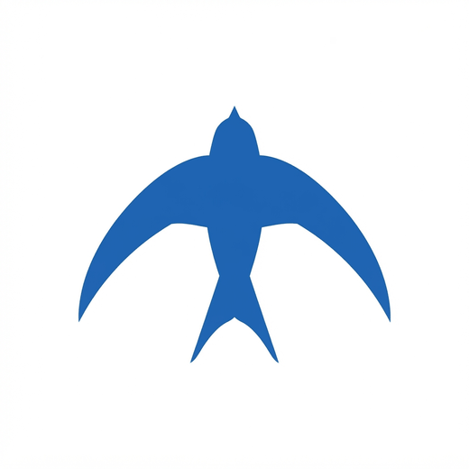
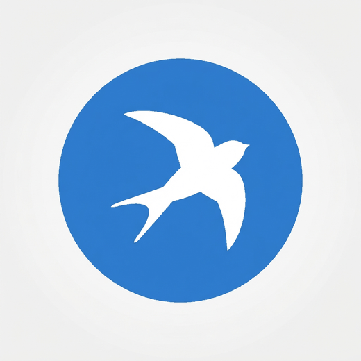
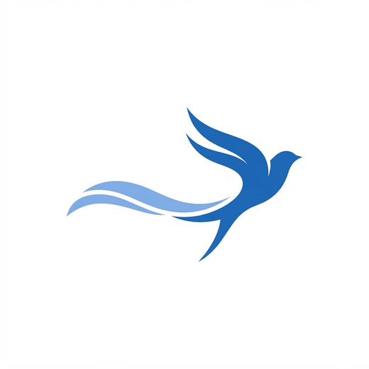
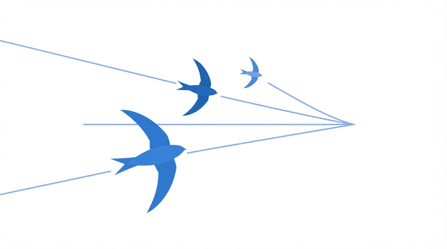
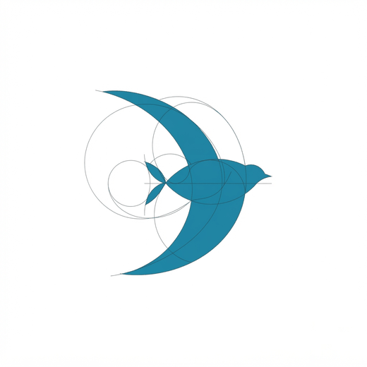
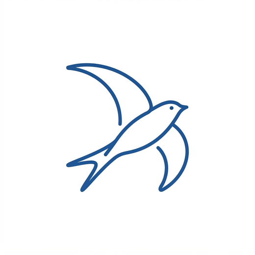
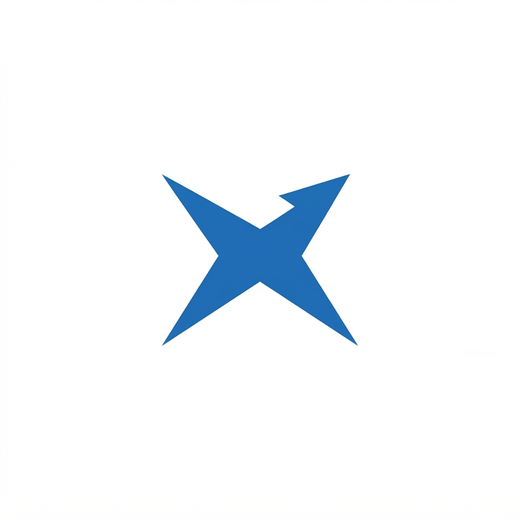

Маскот · выбираем вдвоём
Орёл отменён. Стриж точнее по смыслу: самая быстрая птица, почти всё время в полёте, и с именем «Ветра» читается заодно. Ниже — не варианты одного рисунка, а восемь разных подходов.
Черновики из генерации. Финальный знак будет нарисован в SVG: точный цвет, ровные кривые, чёткость в любом размере и вес в килобайтах.







Знак живёт не на постере, а в значке вкладки. Один и тот же файл в трёх размерах.
Крупные формы переживают уменьшение, тонкие детали — нет. Поэтому в мелком размере выигрывают силуэты, а не рисунки: клюв и вилка хвоста превращаются в пятно раньше, чем крылья.
Проверена на контраст живьём: витрина дизайн-системы считает его прямо на странице и уже поймала две ошибки.
Google Sans для заголовков, Google Sans Text для текста. Лежат в проекте, не тянутся со стороннего сервера.
Знак — решение на годы, его не переигрывают через месяц. Поэтому страница не выбирает за вас: моя рекомендация помечена, но последнее слово ваше.
Что смотреть при выборе. Как выглядит в 16 пикселях. Не похож ли на чужой знак. Работает ли в одну краску — на печати и в чёрно-белом документе. Не читается ли как что-то постороннее: у шеврона, например, вышел крестик «закрыть».
Что дальше. Выбранный знак рисуется в SVG начисто, из него собираются favicon всех размеров, иконка приложения и подпись в шапке сайта.